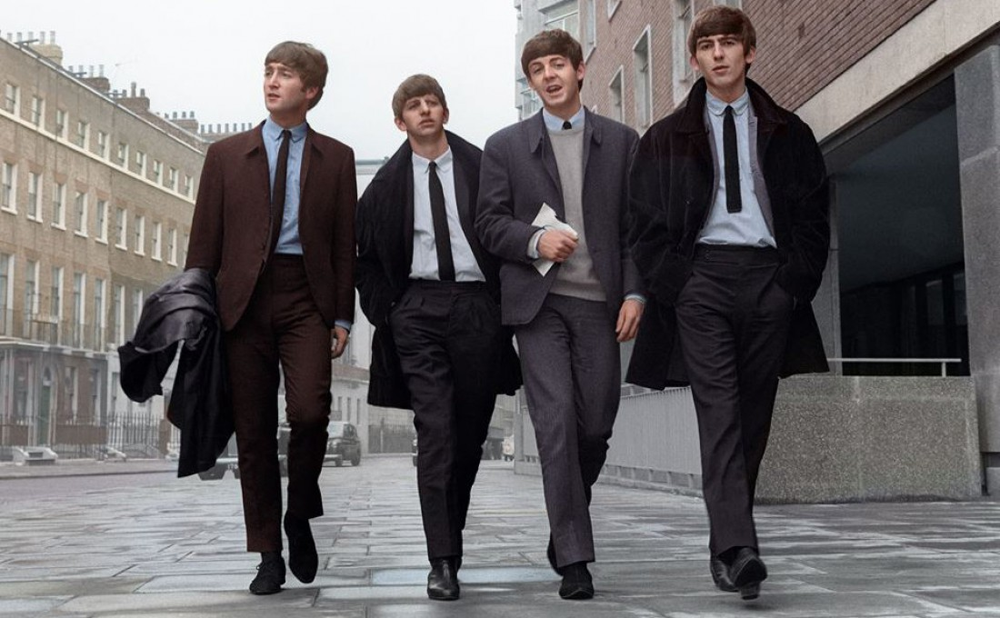
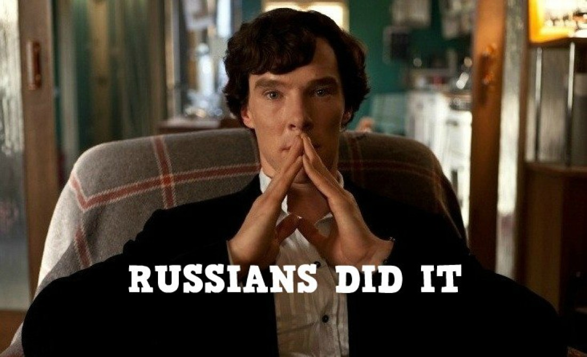
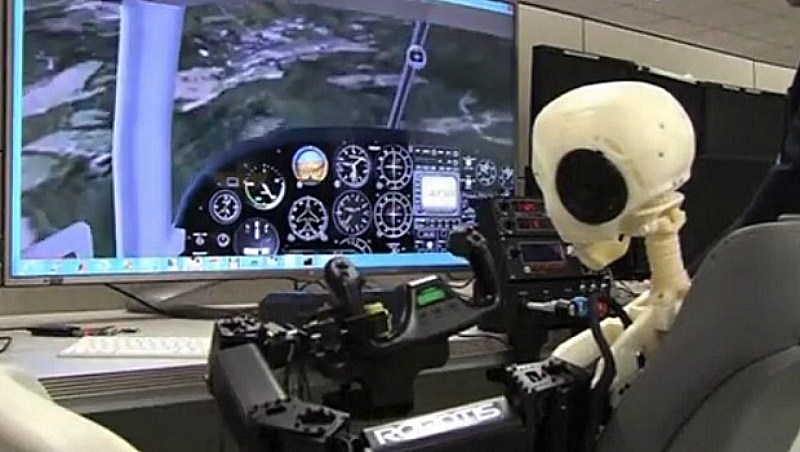

В 1970 г. группа распалась, ее участники начали заниматься сольными проектами. В 1980 г. Джон Леннон был убит рядом со своим домом в Нью-Йорке фанатиком Марком Чепменом, а Джордж Харрисон умер от рака в 2001-м. В 2001 г. решением ЮНЕСКО 16 января было признано Всемирным днем The Beatles.
Авторы сериала "Шерлок" Стивен Моффат и Марк Гэтисс рассказали о возможных съёмках пятого сезона. В новых сериях захватывающей детективной истории Шерлок и Ватсон продолжили бы нелёгкое занятие по раскрытию запутанных дел.
На этой неделе iPhone отмечает юбилей. 10 лет назад Стив Джобс представил первый смартфон Apple. Это событие стало одним из самых знаковых в истории компании и существенно повлияло на развитие отрасли смартфонов и расстановку сил компаний-производителей, положив конец лидерству Nokia и BlackBerry.

"Извини, но ты живешь не в России" За сутки до официальной премьеры финала четвертого сезона "Шерлока" его слили в сеть в озвучке Первого канала. Создатели сериала попросили в Twitter не распространять серию и постараться обойтись без раскрытия сюжета в интернете.
Трое полицейских погибли, еще четыре стража порядка получили ранения сегодня в результате взрыва в турецкой провинции Диярбакыр в уезде Сур возле стройплощадки кампуса университета Диджле. Об этом сообщает агентство Anadolu.

Британский ученый Андреас Хейн заявил, что искусственный интеллект отправится в космическое путешествие к 2050-2060 годам. По его мнению, робот сможет управлять межзвездной миссией с полезной нагрузкой весом в несколько сотен тонн.